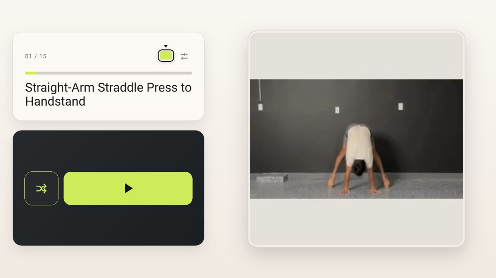
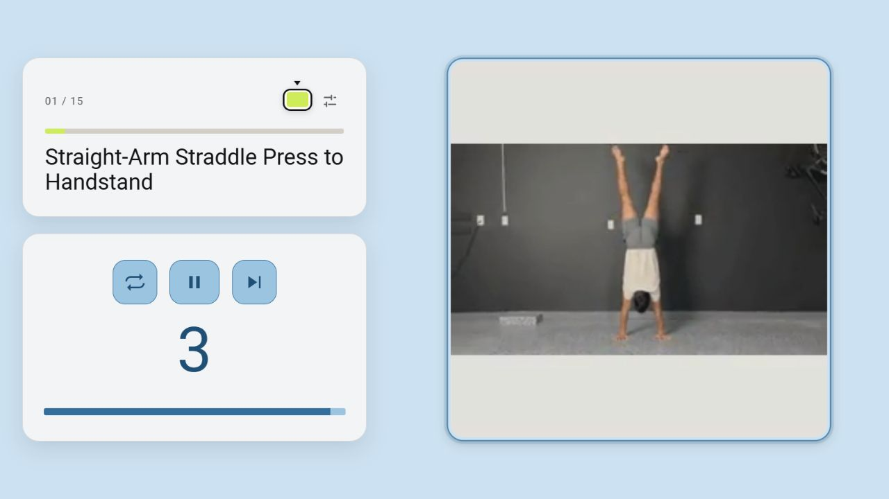
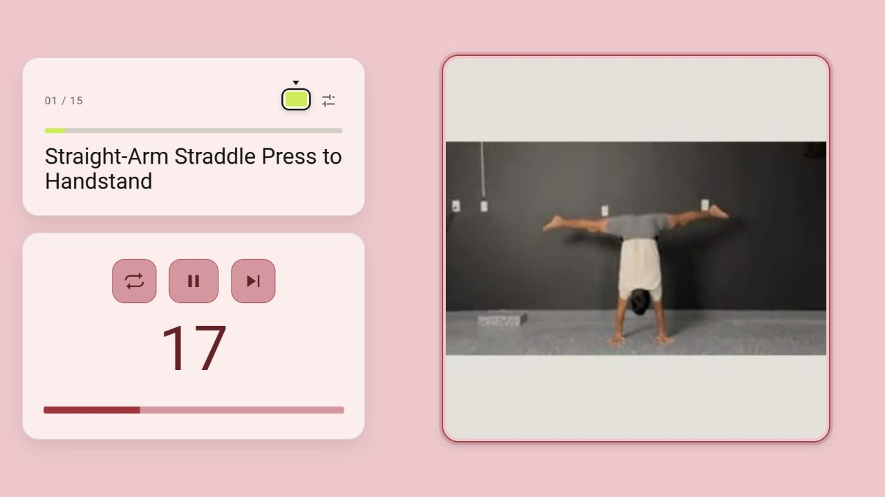
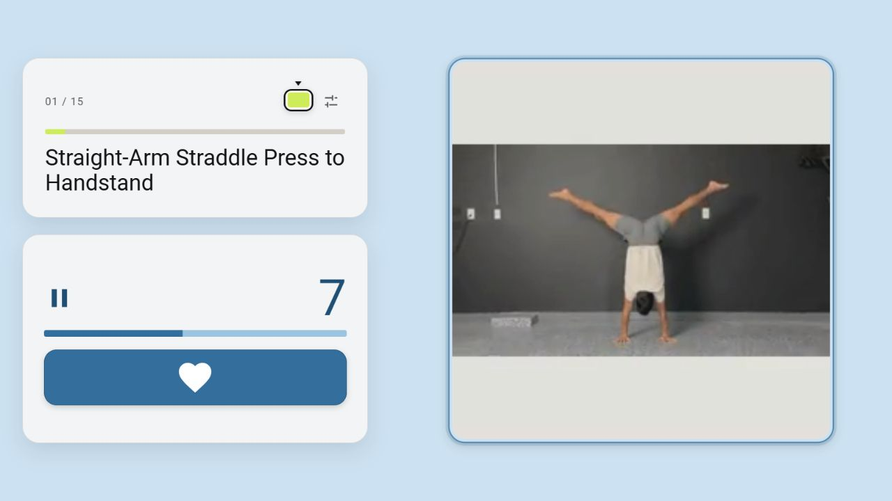

Revision 91 · one new movement · 23 October 2026
Actual web workout screenshots at 1280 × 720. An isolated local synthetic fixture used the normal planner to select the kept press in a valid 15-minute lineup and moved its slot first for inspection. The preparation, full 45-second work block and 15-second Rest ran at normal speed. This is test data, not a completed personal workout.
The 5.1-second GMB excerpt shows grounded feet, a straight-arm no-jump straddle press, and the joined-leg freestanding handstand. It resets to the starting frame; no reverse descent or extra apparatus is implied. All old exercises and assessments remain unchanged. Original instruction and demonstration.




The elevated one-arm flag was deferred despite clear footage: its required mirrored pair cannot fit the intended new-workout budget. It is not in revision 91.